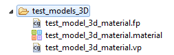
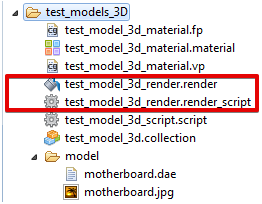
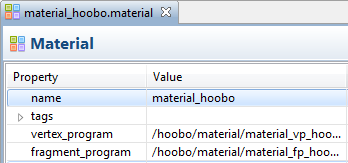
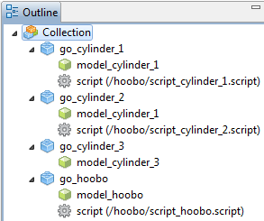

Компонент материал
 |
Файл: test_model_3d_material.vp (Vertex Program) // view_proj и world устанавливаются как вершины констант // получим к ним доступ в нашей программе вершинных шейдеров // объявив их как "uniform". // uniform mediump mat4 view_proj; uniform mediump mat4 world; // position - занимает исходную позицию вершин. attribute mediump vec4 position; // texcoord0 - содержит координаты текстуры для этой вершины. attribute mediump vec2 texcoord0; // Определение вариантов которые будет интерполировать координаты текстуры // между вершинами. Фрагмент шейдер будет будет читать это значение. varying mediump vec2 var_texcoord0; void main() { // Умножьте вид, проекцию и мир матриц в одну. mediump mat4 mvp = view_proj * world; // Изменяющаяся переменная texcoord0 находится в texcoord0 в положении // этой вершины. var_texcoord0 = texcoord0; // Перевести позицию вершины с матрицей mvp. // The vec4(position.xyz, 1.0) гарантирует, что w компонента // позиция всегда 1.0. gl_Position = mvp * vec4(position.xyz, 1.0); } Файл: test_model_3d_material.fp (Fragment Program) // Координаты текстуры для этого фрагмента варьируется между вершинами varying mediump vec2 var_texcoord0; // Данные текстуры для компонента доступна через sampler2D uniform sampler2D diffuse_texture; void main() { // Просмотр цвет текстуры в этом фрагменте координаты // и установить цвет фрагмента к нему.. gl_FragColor = texture2D(diffuse_texture, var_texcoord0); } |
Компонент Визуализации
  |
Файл: test_model_3d_render.render_script function init(self) self.model_pred = render.predicate({"model_hoobo"}) -- добавили предикат self.tile_pred = render.predicate({"tile"}) self.gui_pred = render.predicate({"gui"}) self.text_pred = render.predicate({"text"}) self.particle_pred = render.predicate({"particle"}) self.clear_color = vmath.vector4(0, 0, 0, 0) self.clear_color.x = sys.get_config("render.clear_color_red", 0.1) self.clear_color.y = sys.get_config("render.clear_color_green", 0.3) self.clear_color.z = sys.get_config("render.clear_color_blue", 125) self.clear_color.w = sys.get_config("render.clear_color_alpha", 0) self.view = vmath.matrix4() end function update(self) render.set_depth_mask(true) --render.clear({[render.BUFFER_COLOR_BIT] = self.clear_color, [render.BUFFER_DEPTH_BIT] = 1, [render.BUFFER_STENCIL_BIT] = 0}) render.clear({[render.BUFFER_COLOR_BIT] = self.clear_color, [render.BUFFER_DEPTH_BIT] = 1}) render.set_viewport(0, 0, render.get_window_width(), render.get_window_height()) render.set_view(self.view) render.set_depth_mask(false) render.disable_state(render.STATE_DEPTH_TEST) --render.disable_state(render.STATE_STENCIL_TEST) render.enable_state(render.STATE_BLEND) render.set_blend_func(render.BLEND_SRC_ALPHA, render.BLEND_ONE_MINUS_SRC_ALPHA) render.disable_state(render.STATE_CULL_FACE) render.set_projection(vmath.matrix4_orthographic(0, render.get_width(), 0, render.get_height(), -1, 1)) render.draw(self.tile_pred) render.draw(self.particle_pred)
-- Для отображения 3D render.set_depth_mask(true) render.enable_state(render.STATE_DEPTH_TEST) render.enable_state(render.STATE_CULL_FACE) render.set_projection(vmath.matrix4_orthographic(0, render.get_width(), 0, render.get_height(), -1000, 1000)) render.draw(self.model_pred) -- Для отображения 3D
render.draw_debug3d() render.set_view(vmath.matrix4()) render.set_projection(vmath.matrix4_orthographic(0, render.get_window_width(), 0, render.get_window_height(), -1, 1)) --render.enable_state(render.STATE_STENCIL_TEST)
render.set_depth_mask(false) -- Для отображения 3D render.disable_state(render.STATE_DEPTH_TEST) -- Для отображения 3D render.disable_state(render.STATE_CULL_FACE) -- Для отображения 3D
render.draw(self.gui_pred) render.draw(self.text_pred)
--render.disable_state(render.STATE_STENCIL_TEST) --render.set_depth_mask(false) render.draw_debug2d() end function on_message(self, message_id, message) if message_id == hash("clear_color") then self.clear_color = message.color elseif message_id == hash("set_view_projection") then self.view = message.view end end |
Сцена 3D объектов. Описнаие скриптов взаимодействия с объектами.
 |
Описание файла: script_sylinder_1.script В данном скрипте мы явно указываем направление движения цилиндра function init(self) msg.post(".", "acquire_input_focus") end function on_input(self, action_id, action) if (action_id == hash("mouse_button_left")) then local xmin = action.screen_x - 25 local xmax = action.screen_x + 25 local ymin = action.screen_y - 25 local ymax = action.screen_y + 25 local pos = go.get_position()
if pos.x >= xmin and pos.x <= xmax and pos.y >= ymin and pos.y <= ymax then go.set(go.get_id(), "position.x", pos.x - 5) go.set(go.get_id(), "position.y", pos.y + 2) end elseif (action_id == hash("mouse_button_right")) then local xmin = action.screen_x - 25 local xmax = action.screen_x + 25 local ymin = action.screen_y - 25 local ymax = action.screen_y + 25 local pos = go.get_position(go.get_id()) if pos.x >= xmin and pos.x <= xmax and pos.y >= ymin and pos.y <= ymax then go.set(go.get_id(), "position.x", pos.x + 5) go.set(go.get_id(), "position.y", pos.y - 2) end end end Описание файла: script_sylinder_2.script В данном скрипте цилиндр будет следовать ка указателем мыши function init(self) msg.post(".", "acquire_input_focus") end function on_input(self, action_id, action) if (action_id == hash("mouse_button_left")) then local xmin = action.screen_x - 25 local xmax = action.screen_x + 25 local ymin = action.screen_y - 25 local ymax = action.screen_y + 25 local pos = go.get_position()
if pos.x >= xmin and pos.x <= xmax and pos.y >= ymin and pos.y <= ymax then go.set(go.get_id(), "position.x", action.screen_x) go.set(go.get_id(), "position.y", action.screen_y) end end end На форуме был пример кода для взаимодействия с игровым объектом function on_input(self, action_id, action) if action_id == input_mouse and action.pressed then
local spritePos = go.get_world_position("myGo") -- getting my go position local mouseX = action.x -- getting mouse position local mouseY = action.y local rightBoundary = spritePos.x - 200 --200 is half the width of my go local leftBoundary = spritePos.x + 200 local upperBoundary = spritePos.y + 200 local downBoundary = spritePos.y - 200
if mouseX >= rightBoundary and mouseX <= leftBoundary and mouseY >= downBoundary and mouseY <= upperBoundary then print("clicked") else print("outside") end
end end |
Так же можно управлять определённый объекто с помощию мыши или клавиатуры (поворот)
function init(self)
msg.post(".", "acquire_input_focus")
end
function on_input(self, action_id, action)
if (action_id == hash("touch") or action_id == hash("mouse_press")) then
-- Where did the user press/touch and how large is the screen?
local x = action.screen_x
local y = action.screen_y
local width = sys.get_config("display.width")
local height = sys.get_config("display.height")
-- Translate the interaction position to rotations
-- on X and Y axis.
local xrot = vmath.quat_rotation_x(math.pi * 2 / height * y)
local yrot = vmath.quat_rotation_y(math.pi * 2 / width * x)
go.set_rotation(xrot * yrot)
end
end
function on_input(self, action_id, action)
local width = sys.get_config("display.width")
local height = sys.get_config("display.height")
if (action_id == hash("key_up")) then
local xrot = vmath.quat_rotation_x(math.pi * 2 / height * 100)
go.set_rotation(xrot)
elseif (action_id == hash("key_down")) then
local xrot = vmath.quat_rotation_x(math.pi * 2 / height * 0)
go.set_rotation(xrot)
end
end
Created with the Personal Edition of HelpNDoc: Easily create CHM Help documents